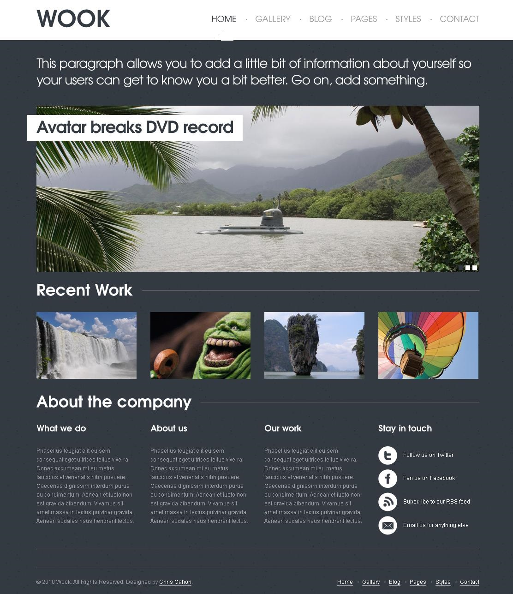
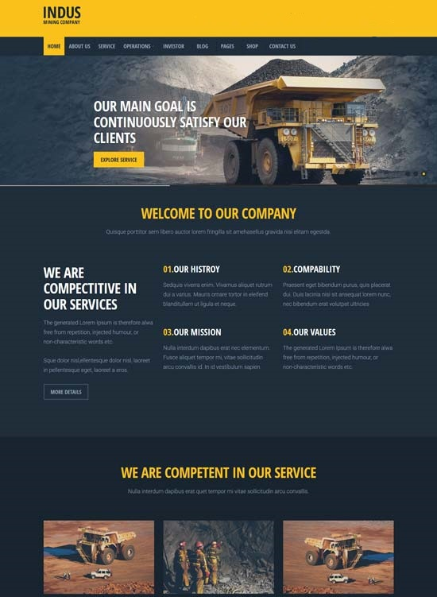
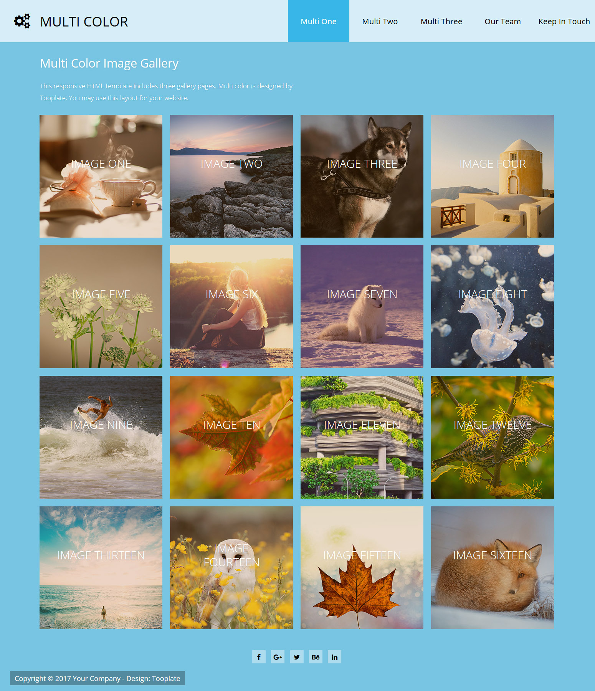
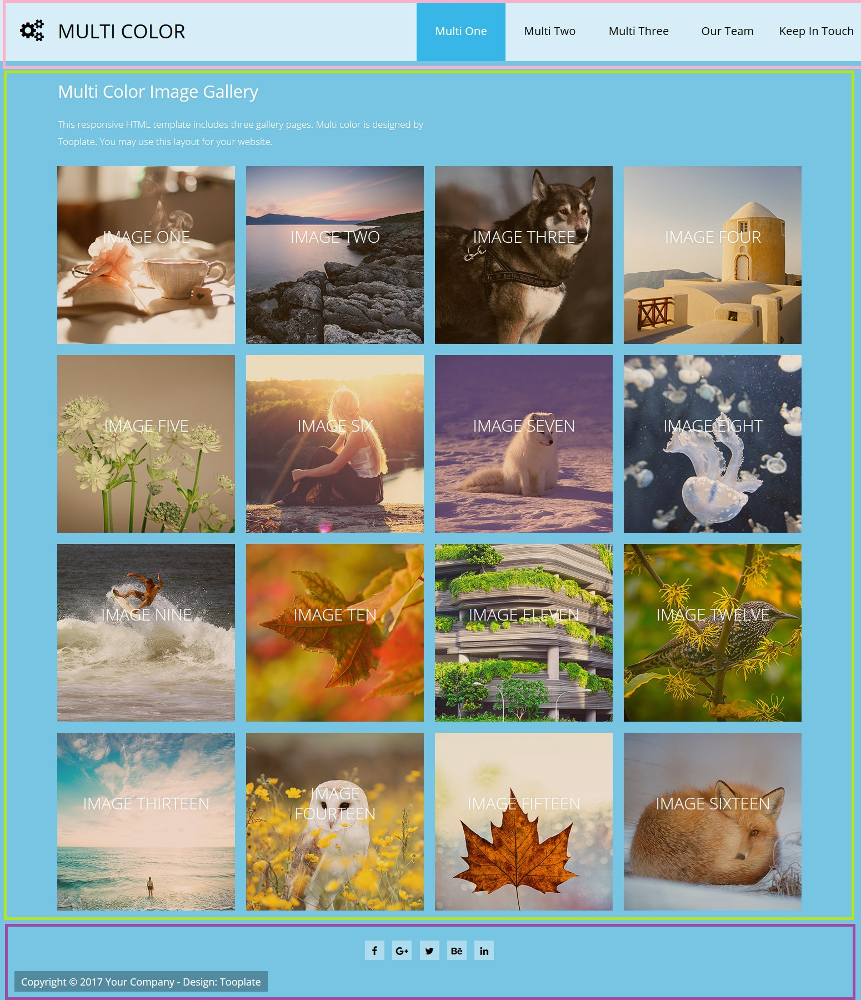
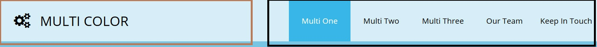

ПР01. Верстка сайта используя стандарт HTML5 и CSS3
Ваша задача - сверстать главную страницу сайта, в соответсвии с прототипом. В качестве прототипа можно выбрать одно из трёх изображений представленых ниже

Прототип вариант 1Прототип вариант 2

Прототип вариант 3
100% сходство НЕОБЯЗАТЕЛЬНО!! Главное чтобы дизайн страницы соотвествовала прототипу, а также основные блоки с контентом, панель навигации и изображения находились на своих местах.
Выбор шрифтов, изображений, наполнение блоков контентом остаётся за студентом.
Для выполнения данной работы разрещается использовать только HTML и CSS
Пример выполнения
В качестве примера возмём следующий прототип главной страницы сайта

Пример выполнения
Ниже будут представлены ссылки на примеры. Пожалуйста обратите внимание на коментарии в разметки и файле таблице стилей. Там так же подробно идёт описание что для чего делается.
Разбиение на блоки
Первое что не обходимо сделать это разбить на основные состовляющие(блоки) наш прототип.

Пример выполнения
Наш пример мы разделили на три больших блока это шапка, основной контент(в нашем случаи это подобие фотогалерии) и подвал. Все они выделены разным цветом(розовым, зелёным, фиолетовым)
Но каждый большой блок может делиться на более мелкие блоки или часть. Как например панель навигации.

Пример выполнения
Наша панель навигации делиться на два блока: эмблему сайта и меню с разделами сайта.
Оставив так разметку без добавления стилей мы получим просто список в несколько строк. Для того чтобы список стал горизонтальным необходимо воспользоваться свойством display: inline-block;
nav ul li {
display: inline-block; /* вкл/выкл свойтсво в браузере для эксперимента */
}
nav a {
display: block; /* теперь все ссылки в меню блочные */
padding: 2rem 2rem; /* если ссылка не отображается как блочный элмент - то не все отступы сработают */
text-decoration: none; /* убрать подчёркивание */
color: #000; /* вместо синего цвета как у всех ссылок - сделаем название меню черным */
}
/* небольшая реакция на действия пользователя */
nav a:hover {
background-color: #56a0d3; /* при наведению на любую из ссылок меню бужет меняться цвет фона под ней */
}
В шапке нашего прототипа кроме меню находится и логотип фирмы. Оба они расположены горизонтально(визуально как бы в одну строку).
Один из способов разместить два блока по разным краям это воспользоваться свойством float.
Зададим логотипу обтекание слева, а меню сайта справа. Так же главное правильно выбрать ширину элементом, чтобы в сумме их ширины не давали больше чем ширина их родителя то есть тэга <header>
Да и пожалуй самое главное это пустой элемент <div> со свойством clear:both; отменющим все обтекания.
Более наглядный пример про свойтво float был показан в лекции по позиционированию элементов.
<header>
<!-- Логотип находится слева -->
<div id="logo">
<a href="/">
<figure>
<img src="img/logo.png">
</figure>
<span>Multi color</span>
</a>
</div>
<!-- Меню находится справа -->
<nav>
<ul>
<li><a href="">One</a></li>
<li><a href="">Two</a></li>
<li><a href="">Three</a></li>
<li><a href="">FAQ</a></li>
<li><a href="">About</a></li>
</ul>
</nav>
<!-- Не забываем отменить обтекание иначе не имело смысла использовать float свойтсва для элементов -->
<div style="clear:both;"></div>
</header>
nav {
float: right; /* теперь меню плавующее - прижимаем его к правому краю шапки */
width: 60%; /* дадим ширину в 60% от ширины родителя, т.е HEADERа */
text-align: right; /* выравнивание содержимого по правой границе */
}
#logo {
float: left; /* логотип будет наоборот по правому краю шапки */
width: 35%; /* логотипу дадим только 30% шапки; оставшиеся 5% родителя пойдут в качестве пространства между блоками */
}
Здесь показана не вся информация касающаяся шапки сайти. Более подробную информацию Вы можете подчерпнуть изучая программный код примеров.
Фотогалерея
Для представления фотогалерии в ряд воспозуемся свойством display:inline-block;, а так же атрибутом class="". Атрибут class="" может принимать сразу же несколько имён классов, чем мы и воспользуемся
Создадим класс .pic для всех картинок, по скольку у всех них есть общие свойтсва(такие как ширина, высота, выравнивания...). Но и есть разные свойства и пожалуй самое существенное отличие это адрес рисунка. По этому были созданы ещё четыре отдельных класса .one, .two, .three, .four которые отличаются адресом рисунка для отображения.
Обратите внимание на свойства background-position - обеспечивающее положение фонового рисунка и background-size: cover; - благодаря которому происходит масштабирование рисунка по размеру блока